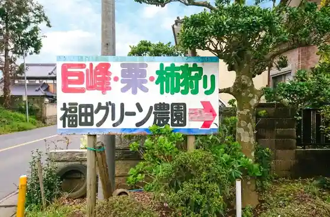
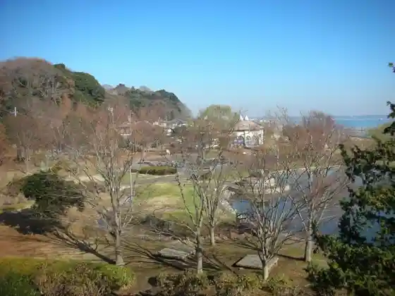
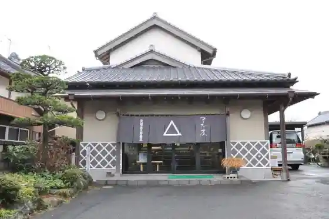
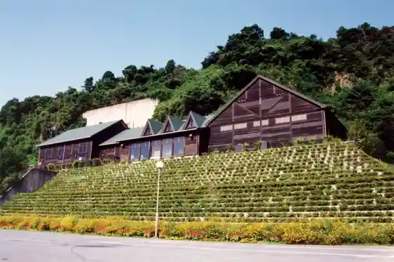

Kasumigaura Aquarium
Kasumigaura, Ibaraki · 029-896-0722 · Official / source link
Fukuda Guriin Farm
Kasumigaura, Ibaraki · 0299-59-3251 · Official / source link

Ho Saki Park
Kasumigaura, Ibaraki · 029-897-1111 · Official / source link

Kaizuka Chuzaburo Shoten
Kasumigaura, Ibaraki · 029-896-0028 · Official / source link

Yukiiri Fureai no Sato Park
Kasumigaura, Ibaraki · 0299-59-7000 · Official / source link

Kasumigaura Koryu Center
Kasumigaura, Ibaraki · Official / source link
to to Sake Seizo (Kabu)
Kasumigaura, Ibaraki · 0299-59-2141 · Official / source link
Kasumigaura History Museum
Kasumigaura, Ibaraki · 029-896-0017 · Official / source link
Numata Farm
Kasumigaura, Ibaraki · 090-3475-3288 · Official / source link
Kasumigaura Kasseika Center Seisambutsu Chokubai Tokoro
Kasumigaura, Ibaraki · 029-831-6511 · Official / source link
Kanko Ho Eisen (Kasumigaura)
Kasumigaura, Ibaraki · 029-897-1111 · Official / source link
JA Ibaraki Chiyoda Hanano Ka Nosambutsu Chokubai Tokoro
Kasumigaura, Ibaraki · 0299-37-7502 · Official / source link
Imai Ichigo Sono
Kasumigaura, Ibaraki · 029-896-1251 · Official / source link
Suzumekko Mori
Kasumigaura, Ibaraki · 0299-59-3477 · Official / source link
Nagata Ichigo Sono
Kasumigaura, Ibaraki · 0299-59-7540,090-5795-9477 · Official / source link
San Tsu Ishi Forest Park
Kasumigaura, Ibaraki · 0299-59-7000 · Official / source link
Narisawa no Yamazakura
Kasumigaura, Ibaraki · 029-897-1111 · Official / source link
Tasaki Farm
Kasumigaura, Ibaraki · 0299-59-5987 · Official / source link
JA Tsuchiura Sanfuresshu Kasumigaura Mise
Kasumigaura, Ibaraki · 029-897-0682 · Official / source link
JA Ibaraki Chiyoda Dai 1 Nosambutsu Chokubai Tokoro
Kasumigaura, Ibaraki · 0298-34-8831 · Official / source link
Ikeda Farm
Kasumigaura, Ibaraki · 0299-59-6781 · Official / source link
Ko Minka Eguchi Ya
Kasumigaura, Ibaraki · 080-9095-7800 · Official / source link
Fugu Anko Kisaku
Kasumigaura, Ibaraki · 029-831-7472 · Official / source link